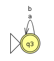
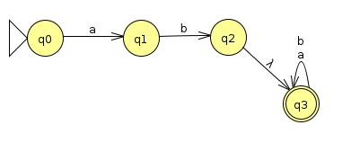
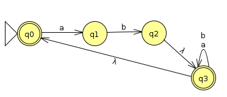
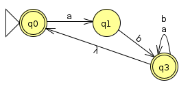
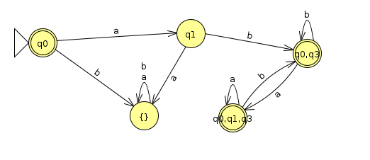

Week 4: Converting Regular Expressions To DFAs And Back
Chris Tralie
We worked through some examples of regular expressions in class last Friday. What's neat about these is that in terms of regular languages, they are equally as expressive as DFAs. In other words, everything that can be expressed as a DFA can be equivalently expressed as a regular expression, and every regular expression can be converted into a DFA. The means that, amazingly, the operations of union, concatenation, and star can be used to build up any regular language from scratch.
Regular Expression To NFA
Sipser has a great explanation of this, so I won't rehash it here. But I'll go through one example of a concatenation and star operation.
Example 1
Let's consider the alphabet Σ={a, b} and the regular expression (abΣ*)* . Let's start with a machine that recognizes ab (which, if we're being very pedantic, is itself the concatenation of the language {a} and the language {b})

Now, let's consider the machine that recognizes Σ*, or the language of any strings made up of a and b
If we follow the concatenation rules and lambda transition the accept states from ab to the start state of Σ*, then we get this:
Finally, to implement the star, we can lambda transition the accept state back to the start state and change the start state into an accept state (our book does this slightly differently, but it's equivalent)
We know that every NFA can be converted to a DFA, proving that this is regular. But let's actually do the conversion out of curiosity. First, we'll simplify the machine a bit
Now, let's start at the start state and fill out tuples of states that we branch to like we always do. The one subtle point is that whenever we transition to q3, we also immediately transition to q0 because of the λ transition from q3 to q0
| a | b | |
| q0 | q1 | {} |
| q1 | {} | (q0, q3) |
| (q0, q3) | (q0, q1, q3) | (q0, q3) |
| (q0, q1, q3) | (q0, q1, q3) | (q0, q3) |
| {} | {} | {} |
Below is a state transition diagram for this DFA (Click here to download the JFLAP file)
If we stare at it, we can see that we accept either if we're the empty string, or if we're ab followed by a completely arbitrary set of symbols. This is consistent with the regular expression above.
DFA To Regular Expression
Now let's try to go the other way and show that it's possible to convert a DFA to a regular expression. Actually, the Sipser book explains a proof in quite a lot of detail, I'm just going to go through a few examples below. For convenience of construction, I'll be more concise than Sipser and leave out all of the null transitions (which he includes to make the formal inductive proof easier, but which become cumbersome when we're actually trying to create the regular expression).
Example 1
Example 4
Click here to see an interactive example in the Virginia Tech book